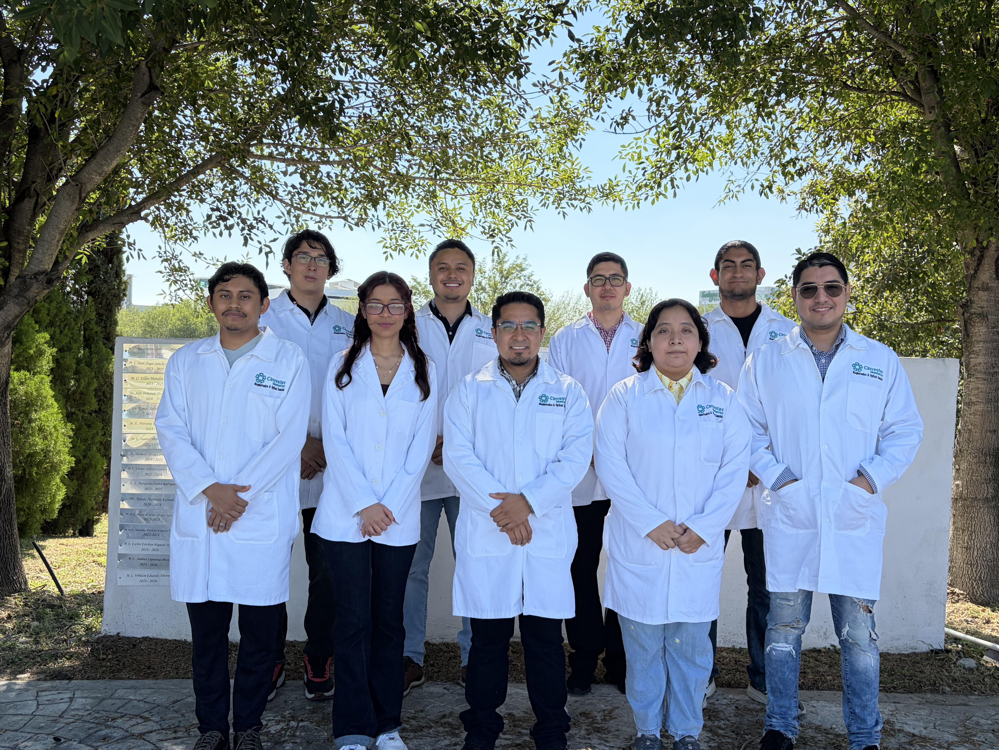
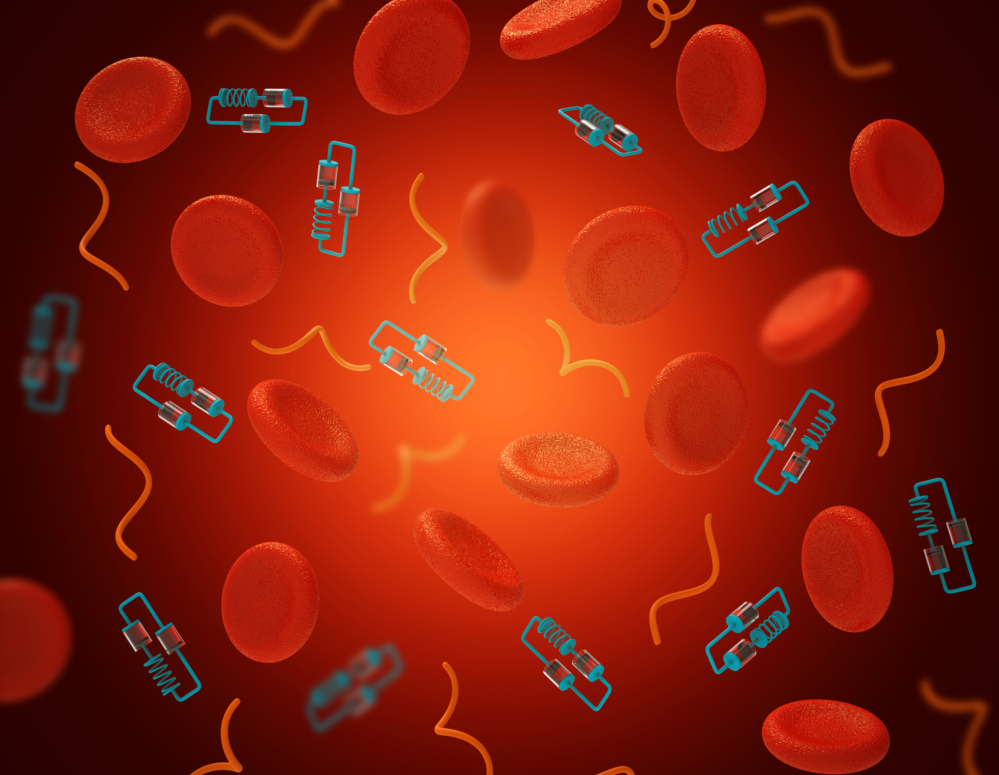
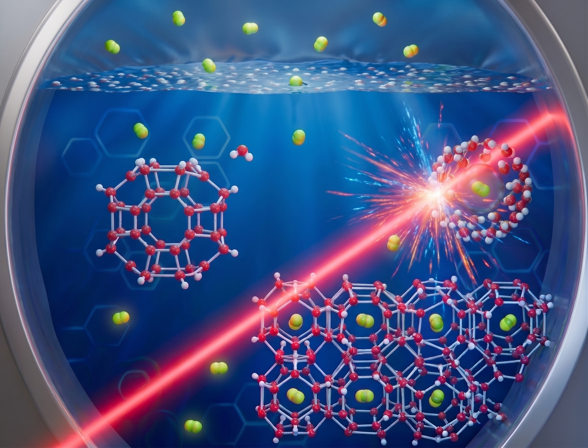
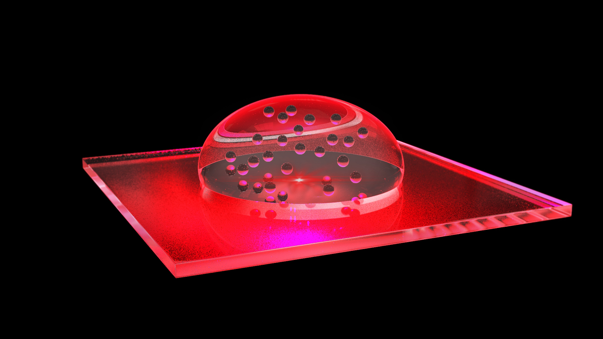
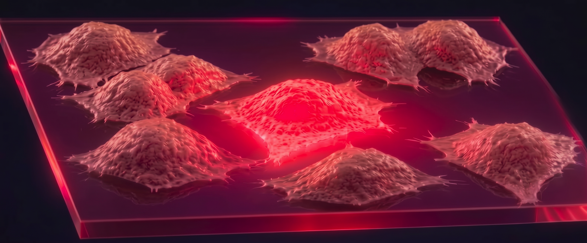
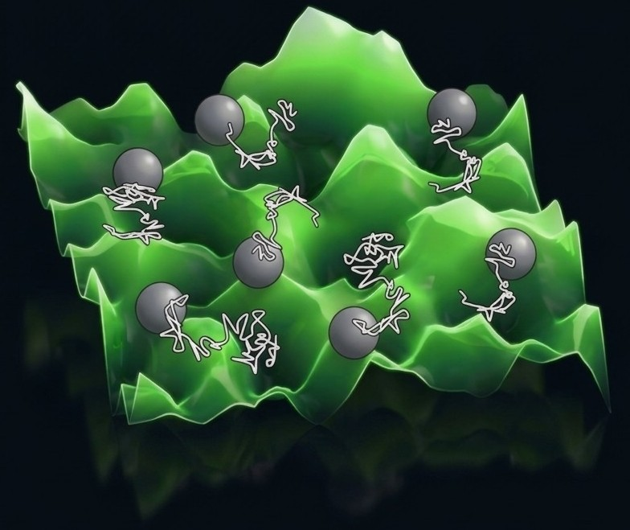

Welcome to the Biophotonics and Optical Sensing Laboratory!
The detection and processing of optical waves is at the core of numerous sensing technologies relevant to material science, biology, and medicine. Through basic research and applied studies, our group is dedicated to advancing optical sensing strategies for biomedical applications; including the development of optical fiber-based sensing platforms as well as the structural dynamics and micro rheological characterization of complex materials like colloidal systems, non-ergodic media, and biological fluids and aerosols.
For inquiries about our research, collaboration opportunities or available infrastructure, please contact Dr. José Rafael Guzmán Sepúlveda.


Blood Microrheology
Extreme Environments
Colloidal Dynamics
Intracellular Dynamics
Random Optical FieldsDr. Guzmán-Sepúlveda's multidisciplinary research (optics, materials science, biomedical, biophysics) has relied on interdepartmental and interinstitutional cooperation, industry collaborations, and partnership with hospitals. The research projects in which he has participated have been funded by different agencies, including SECIHTI, ONR Global, ARL, DEVCOM, DARPA, NIH, NSF, and Malvern Panalytics, among others. Ongoing and relevant past research projects in which Dr. Guzmán-Sepúlveda has participated are:
The symbol † indicates a student is the first author. The symbol * indicates the corresponding author.
Principal Investigator
José Rafael Guzmán Sepúlveda, PhD
José Rafael Guzmán Sepúlveda is a Mechatronics Engineer (U. of Guanajuato, 2010; Summa Cum Laude). He holds a Master's Degree in Electronics Engineering (Autonomous U. of Tamaulipas, 2013; Honors). He received his Master's Degree and Ph.D. in Optics from CREOL, The College of Optics and Photonics, U. of Central Florida (2016 and 2019, respectively; Student of the Year). He has been an active member of international societies, including OPTICA (formerly OSA), IEEE, SPIE, and the Mexican Academy of Optics (AMO). He has been part of the Board of Directors of AMO (Member, 2023-2024; Vice President, 2025-2026). He is also founding member and advisor of the OPTICA student chapter Biophotonics Cinvestav Monterrey. Dr. Guzmán Sepúlveda periodically teaches graduate courses in the Biomedical Engineering and Physics programs at Cinvestav Monterrey and continuously supervises doctoral, masters, and undergraduate projects.
Postdoctoral
PhD Students
Master's Students
Articles
- Guzman-Sepulveda, J. R. Peeking inside colloidal droplets as they evaporate. Avance y Perspectiva, 7(4), 2022.
- Guzman-Sepulveda, J. R. Passive microrheology of blood: the regime where blood measures itself. Avance y Perspectiva, 7(5), 2022.
- "One-page thesis" institutional website.
Biophotonics Student Chapter
The OPTICA student chapter Biophotonics Cinvestav Monterrey shares the laboratory's activities and events on its social networks.
Physical Address
Cinvestav Unidad Monterrey
Vía del Conocimiento 201, Parque de Investigación e Innovación Tecnológica (PIIT)
Apodaca, Nuevo León 66600, México
Inquiries
For inquiries about our research, collaboration opportunities or available infrastructure, please contact Dr. José Rafael Guzmán Sepúlveda.
Office Phone: +52 81 11561740 ext. 4515